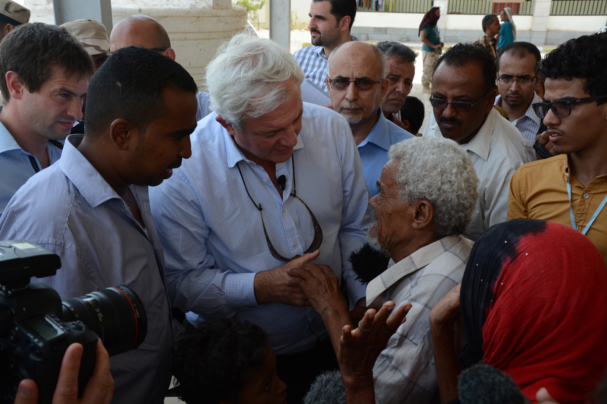

「救われた命一つ一つが、日々の成果そのものなのです。」
人道問題担当国連事務次長 スティーブン・オブライアン インタビュー
 スティーブン・オブライアン氏
スティーブン・オブライアン氏は人道問題担当国連事務次長兼緊急援助調整官に就任して以来、南スーダン、イラク、イエメン、シリアなど、今も続く紛争によってもたらされた荒廃を目の当たりにし、業務にまい進している。
国際開発と公衆衛生分野で20年以上の経験を持つ英国人のオブライアン氏は、食糧、シェルター、安全な飲み水の確保に始まり、紛争に翻弄されている人たちが抱える心理的トラウマへの対処、そして希望を届けるに到るまで、その複雑な人道支援の仕組みにも精通している。
国連ニュースセンターとのインタビューで、国連人道問題調整事務所（OCHA）トップを務めるオブラアン氏は、特に差し迫っている緊急事態の現状や、ドナーの協力を得ることの重要性やその際の課題など、人道支援において不可欠な、様々な側面について語った。ここからイエメンとシリアを訪問する前に行われたオブラアン氏とのインタビュー（簡略化及び編集済のもの）。
国連ニュースセンター（以後U）: どうしてこのような任務を引き受けようと思ったのですか？
スティーブン・オブライアン（以後O）: 人々のいのちを助けるため幅広い役割を持ったチームの一員となって、人々により多くの機会と人間としての尊厳を獲得するチャンスを作り出すこと以上に、崇高な目標はないと思ったからです。究極的にこうした目標を皆で実現しようとする世界最大の組織が国連です。私はこれまでに多様な経験を積み重ねてきましたが、ある意味この仕事は、それらを全て組み合わせたようなものです。私は弁護士や実業家としてキャリアを歩み、政治家として大臣も経験し、様々な途上国で英国首相の特使も務めてきました。私はただ論理を語るだけではなく、すばらしいことを成し遂げる優秀な仲間たちと共に働くことが好きでたまらないのです。人のいのちを救うため人道支援活動を届けるというシステムへのニーズは膨大ですが、この仕事は取り組むに値することだと思っています。
U: 人道支援分野に足を踏み入れるのは、今回が初めてではありませんね。この分野でのご経験について、もう少しお話いただけますか。
O: 職業人として生きる傍ら、私は大学生だった頃から常に関心を持っていたことがあります。それは、私たちの暮らす伝統的な西側社会あるいは（グローバル・サウスに対する）「北」とは、歴史上違うスタート地点に置かれた途上国の国々に対して、どのような形で関わることができるのかということでした。私は開発課題、特に公衆衛生、その中でも世界で最も人の命を奪ってきた病気であるマラリアとの熾烈な闘いに携わってきました。この病気はいまやほぼ完全に治療することが出来、予防も可能になりました。
そういった中で、私は多くの素晴らしい人々と世界各地で働いてきました。まず、私はイギリスの国会議員として、こうした問題を提起する足がかりを得ました。後にその役割はグローバルなものへと発展し、私は「ロールバック・マラリア・プロジェクト」* の支援者になりました。公衆衛生の分野は、最も立場が弱く、最も助けを必要とする人たちに人道支援を届け、大きな変化をもたらし得るという明らかな好事例だと思います。
U: 今のお立場に就かれて、すでにご覧になられたことなど、印象を伺えますか？

O: 世界は、国連と全加盟国を通して、人道的ニーズが生じた場合にはそれに必ず対応するという固い決意を抱いているということです。危機がしばしば長期化することもあるような自然災害の際、慈善活動家や民間セクター、国連機関や国際NGO、国内や地元のNGOなどの関係者をはじめ、世界がどれほど団結してきたかを見れば明白です。国連が持つこれら人道ニーズへの対応能力の規模の大きさは、きわめて重要です。他方、紛争の当事者たちに関与する際の課題はアクセスを確保することで、これが最大の難関となっています。
では、私が抱いた第一印象は何かということですね？OCHAは世界中で約4,000人のスタッフを抱えていますが、国連事務次長としてまた緊急援助調整官として、ニューヨークとジュネーブにある2つの本部指揮系統からこの組織を統率しています。究極的には、私達の仕事は調整を進め、様々なリソースを調達し、それによって出来る限りの効果をあげることです。毎年、私たちが救おうとしている命は8,000万人、そのためには200億ドル（約2.4兆円）の資金を集めなければなりません。しなければならないことが極めて膨大な規模で、その上紛争下であればさらに問題が複雑になるということをお分かりいただけるのではないでしょうか。
私がこれまで出会ったのは、実に献身的で、高いスキルと豊富な経験を持ち、数々のすばらしい仕事をしてきたような人たちばかりです。問題は、人道支援ニーズが急激に高まる中、こうしたリソースをどう整理して、シェルターや食糧、きれいな飲み水、基本的な医療サービスや教育の提供などで、いかにして最大の効果を上げるのかということです。それこそが私たちが力を入れて取り組んでいる部分です。すでにかなりの積み重ねと実績があるものの、もっとしなければならないことがたくさんあります。
U: 現在のポジションに就いて、これまでにされてきたことについて話していただけますか。例えば、現地に飛んで関係者とお話をされたことは？
O: もちろんあります。会って交渉しなければならない相手は多岐にわたり、従来からのドナー国や世界各地で連携を進めている新たなパートナーにも会わなければなりません。こうした非常に寛大な支援者の決意は固く、国連による戦略的アプローチに則って人々のいのちを助け、そうして救われたいのちに更なる尊厳と機会を見出せるよう、リソースが役立てられることを望んでいます。私たちは危機に対する強靭さを構築することで、そうした取り組みが持続するように努めています。また私たちは、人びとがそれぞれの人生において、自ら生存し成長する力を育む手助けをしているのです。
そうした中で、リソースの面から私たちを支援してくれる人たちや、影響を蒙った人たちに会うことがとても重要なのです。これまでのところ、私はイラクのクルド人居住地域、レバノン、それから南スーダンを訪れました。私はこうした場所で、国連が目を見張る成果をあげているのを見てきました。地元NGOや国際NGOなど、非常に重要な仕事をするために集まった数多くのパートナーと協働しているからこそ、国連が何千人ものいのちを救ってこられたことは明らかです。
間もなく他の国も訪問します。世界にはシリア、イラク、南スーダン、イエメンなどで、深刻な人道危機が起こっています。また中央アフリカ共和国でも問題を抱えています。西アフリカのエボラ出血熱の蔓延についても、引き続き細心の注意と警戒が必要です。北アフリカ及び西アフリカ地域のサヘル地方でも、人道危機が続いています。さらにフィリピン、ハイチや特に最近ではネパールのような国々では、緊急対応フェーズから移行する際必要な努力が引き続き求められています。復興フェーズを見据え、他の国連機関が担当する「開発」へと移行させていかなければなりません。
ですので、確かに極めて多忙です。これら全ての仕事に加え、ニューヨークでは組織経営や管理、そしてリーダーとしての責務を果たし、また頼もしい実績をあげているジュネーブにも行かなければなりません。また同様に、私たちがきちんと成果をあげているかをチェックしている多くのドナー機関とパートナーシップ関係を築くために、世界各地の首都を訪問する必要もあります。それから世界人道サミットも来年に迫っています。
U: 特に着任後間もない8-9週間のあいだはまさに飛び回られているという感じですね。現場に行く一方で、どのくらい本部で時間を過ごされましたか？
O: 数えたことはないのですが、おそらく14、15日程度かと思います。かなり密度の濃いスタートでした。もちろんすべきことをするための時間を費やしたのですが、それ以上に素晴らしいチームワークで働いているスタッフと会う良い機会でもありました。人道支援の仕事は極めて複雑で、非常に過酷な上、いかなる時でも迅速性が求められます。それもほとんどが緊急事態という状況下でです。それぞれの局面で、豊富な経験に基づいて次に何をなすべきかを知っている人々が必要なのです。私たちに出来るのは、確実にしかるべき人をしかるべき場所に配置することです。どこで緊急事態が発生するかが、常に分かるわけではないのが難しいところですが。
同様に、特に紛争など多くの人道状況は、危機が長期化する傾向にあります。したがって、問題はどこでそうしたことが起きているかを把握することだけではなく、人道支援ニーズを十分かつ効果的に満たせるよう、活動に必要なリソースを維持し続ける方法を見出すことにあります。途方もないチャレンジですが、私たちは日々努力し続けなければならないのです。
U: 現地に行き、差し迫った状況を直接把握することは、どの程度重要だとご自身はお考えですか。

O: 自分の目で見ることに代わるものはありません。私たちは国際人道法とこれに伴う原則に従って活動しているわけですが、地球市民として人々が直面する支援ニーズと脆弱性がどこにあるのかに集中しなければならないことを皆が自覚しています。そうしたニーズがどうして生じているのか、また支援を必要としている人々がどういう人なのかといったことに区別なく、私たちは取り組まなければならないのです。しかしまた同様に、国連としてマンデート（任務）を与えられている者として、声無き人々の代弁者となり、被災者の権利を前面に押し出すことは、与えられた信頼を貫くためにも重要です。助けを必要としている人のために働く私たちは、信頼に足る者でなければならない。そのためには自分の目で確かめなければなりませんし、紛争の当事者にも会うべきだと思っています。
例えば、南スーダンのユニティ州では湿地帯を抜けて戦闘を逃れてきた人々に会う機会がありました。内陸国であるにも関わらず、南スーダンの土地は、それ程深くはないものの長い期間沼地のように水で覆われているということをご存じない方も多いでしょう。季節の変化で、マラリアに感染するリスクも増大します。避難しなければならないような状況では人々の安全を確保するのも困難でしょう。先日の国連安全保障理事会でも申し上げたとおり、南スーダンの何百万人という人たちは、逃げるか殺されるかといった、通常では考えられない厳しい選択の中で暮らしているのです。
現地の人々、特に女性や子どもたちと話していると、それをひしひしと感じます。女性は特に、食料や避難場所、それにきれいな飲み水、また子どもたちに安全な場所を確保する役割を担っていますから。こうした人たちは、軍隊や民兵が茂みで戦闘行為を繰り広げるような危険な場所から逃げる際に、極めて過酷な経験をしているのです。沼地の中を追いかけられたり、自ら戦闘の手段として用いられてしまうことも少なくありません。
当然のことながら、人道支援ニーズは急増します。国連やNGOがキャンプ設営といった計画的なアプローチをもって現地に到着するよりも前に、地元コミュニティが逃げてきた人たちをまず寛大に受け入れます。受け入れ側のコミュニティは、非常に弱い立場に置かれた人たちにシェルターを提供し、また人々に食糧として、来年のためにとっておいた種までも与えることがあります。その結果、さらに人道ニーズが膨大となるのです。こうしたことから、危機に対応する役目が世界全体にあるということを理解し、助けを必要としている人たちのために対応をすることが非常に重要となるのです。
U: その他今起こっている主な人道危機について、それぞれの概要を教えていただけますか。まずはイエメンから。
O: イエメンはかなりの間、治安上の問題があった国です。どこで何が起こっているのか、そして対応すべき人道ニーズがどれくらいなのかは次第に知られるようになってはきましたが、もっとも深刻な問題として対応する必要があります。イエメンの人口2,100万人のうちその80％が、何らかの形での人道支援を必要としています。暴力と戦闘の再燃を発端とし、シェルター、清潔な飲み水と十分な食糧が必要とされています。深刻な医薬品不足にも陥っています。イエメンは伝統的に、燃料など生活物資の80％を輸入に頼っており、これらが長い間入手できない状態が続いています。燃料は日々の生活の必需品で、とうもろこしや穀類を挽き、水をくみ上げるためにも欠かせないのです。
戦闘が継続する中、国連が中立な立場でイエメンに入り、現地NGO、小売チェーンや勇敢なボランティアを通して物資を配るためのアクセスを確保できるよう、最大限の努力で交渉しているところです。また私たちは商業輸送検査当局と協議を進めると同時に、支援プログラムのための資金を調達しようとしています。非常に大変ですが、現在取り組んでいるところです。支援の受け入れ側と協力しながら、必要なニーズを満たすことが出来るよう最大限の努力をしています。現時点ではこれらのニーズをすべて満たしているとは、残念ながら言えない状況です。
U: イラクでの課題は？またOCHAが課題解決のために取り組んでいることは？

O: バグダッドとアルビールの両方を訪ねました。バグダッドの周辺にある、最近拡張された避難民キャンプに行き、20日前にラマディから逃げてきたという女性や子どもたちに会いました。必死に逃げようとしたものの、ブゼビズ橋で止められたそうです。ある女性は子どもたちのほかに、深刻な病気と障がいを抱えた夫がいました。その夫に会ったとき、彼は避難民キャンプで家族とは別のテントに収容されていました。彼らはラマディに乗り込んできたISIS（ISIL）に家を焼かれたため、逃げ出してきたということでした。その前には別の町に逃げていました。彼らの親類の中には、ラマディのはずれにある村に残っている人もいるそうです。
OCHAの調整のもと国連機関からの支援で運営されているキャンプ自体は、良く整えられています。シェルターときれいな飲み水、食糧の定期的な配給が行われており、気温40度を超える暑さをしのぐためのクーラーもありました。もちろんそこにいる人々は皆、家に帰ることを強く望んでいますが、帰る家がないという状態です。焼かれてしまったのです。ラマディに逃げてきたこの人たちは、必ずしも貧しい暮らしをしていた訳ではなかったのですが、一様に将来に対する大きな不安を募らせています。彼らは、中級と呼べるほどの暮らしを捨てざるを得ませんでした。私たちの多くが普段の暮らしで当たり前としているようなものをすべてを失ってしまった喪失感は、心理的により大きな負担となっているのです。
彼らが必要としている支援は、ほかの人道危機となんら違うものではありません。より良いわけでも、よりひどいわけでもないのです。しかし自分達がかつて送っていた暮らしと、将来への希望がまったく持てないという極度に不確実な現実とのギャップに、心の中で苦しんでいるのです。人道支援に従事する私たちは、単に生きのびるための力だけでなく、何らかの形で目に見える希望を与えられるように努めています。小さな子どもたちを育てていきたい母親たちや、自らが関わることで良い影響を与えられるような世界がまだ残されていると信じたい若い人たちに。こうしたことは人道支援の実に重要な一面なのです。
U: 南スーダンではいかがでしたか。
O: 前職にあった時、地上で最も若い国が誕生し、人々には希望が溢れているのを目にしました。ほんの少し前、2011年のことです。サルヴァ・キール大統領にお会いした際、人々の間に希望が湧き起こった瞬間に私も立ちあいました。にも関わらず、彼の軍隊や反政府軍、その他武装グループの戦闘が続き、その希望がいかに打ち砕かれていったかを彼と話しました。治安の悪化は深刻で、国としての体制作りもこれから取り組まねばならないのに、30年を超える争いが今も続いています。そして、雨季には南スーダン全体の40％もがジメジメした湿地帯となるほどに水位が上がり、各地で頻発する暴力行為から逃がれてくる人々は、驚異的な数に達しています。AにはBから逃れてきた市民を保護するキャンプを設置しなければならない一方で、BにはAから逃れてきた人たちを助けるキャンプやコミュニティがあるような状況です。私たちは、南スーダンの人たちのニーズに見合ったリソースや物資を確保していく方法を模索しています。この人たちを保護し人間として享受すべき基本的人権を保証するため、私たちができることは何でもしなければなりません。何にもまして、彼らはシェルター、食糧、きれいな飲み水と医療サービスにアクセスする必要があるのです。
U: 支援を必要としている人々に必要なものを届けるため、リソースや資金を持つ人々と交渉することの重要性について話していただけますか。

O: 人道ニーズに対応するため、自分たちのリソースを提供したいと望む人々は増えていますし、今後さらに増えていかなければなりません。地球市民であるということはどういうことか、私たちはより意識するようになっています。自分の身の回りのことだけを考える傾向にある人もいますが、多くの人は治安の問題や、地球の未来、人道ニーズ、そして何よりも、自立した経済を実現することの重要性を認識していると思います。
私たちは地球市民の一員として、世界中のすべての人が、それぞれの政治に参加したり携わったりする機会を担保し、自分達の声が届いていると感じられるようにする義務を負っています。こうしたことは単なる偶然によって、民主的で社会保障システムのある国に生まれた者だけの特権であってはならないのです。これは根源的に「ヒューマニティ」という価値感によってもたらされるものだということを認識しなければなりません。より豊かな国のドナーは、懸命に稼いだお金が何に使われるのかを知りたいものです。そこで人道支援のために投資することが、やがてすばらしい成果につながり、実際にそれが達成されていることを具体的に示すことが重要となるのです。私たちはアドボカシーや事実の報告、緊急事態が起きているあらゆる現場で私たちが築き上げてきたパートナーシップを通じて、こうした努力を続けています。それは自然災害の場合も紛争下の場合も変わりません。
このことはしかしながら、紛争下にあってはきわめて複雑です。長期化しているケースが多いので、持続可能性は尚のこと厳しくなります。信頼、信用、そしてデータの正確性を確かなものとしなければなりません。OCHAは特に、きちんとした事実に基づいた情報をできるだけ確保するという重大な責任を負っています。私たちに対する信用は、正当な情報を迅速に示すことが出来るからこそ成立し、だからこそ情報を活用する人々も、それを信じて行動することが出来るわけです。私たちがあるニーズに対してリソースを調達しマッチングさせる際は、「パイプライン効果 」といって投入した金額で得られる成果を予め明示できるようにしています。資金の使途を変えたり高すぎるコストを払ったりすることなく結果を生むことが、支援者による信頼につながっています。
そして私たちは、より強固なパートナーシップを築いています。世界にまたがる包括的な組織として、脆弱性に直面し、ニーズが生じた際には、誰の影響下でどのような形でこれらが生じているかに関わらず、ニーズを満たさなければなりません。国際人道法が求めている通り、第一に私たちはいずれかの肩を持つことなく、事実のみに従って動かなければなりません。第二に、独立して活動するため信頼を得なければなりません。皆のニーズを満たす上で、一方のあるいは他方の影響力に甘んじないという姿勢を確かに示すことによってのみ、これが可能になります。このようにすることで、リソースの確保が最も持続的なものとなるのです。政府、ドナー、慈善活動家、NGOや民間セクターとの信頼関係は、国連機関の中で最も重要です。私たちが努力して関係を築き、また発展させていくべき関係者・団体がまだまだ非常に多くあります。
U: 来年にイスタンブールで行われる世界人道サミット（WHS）と、そこで期待される成果についてお話し頂けますか。
O: WHSは2016年5月23日から24日にかけてイスタンブールで開かれます。次の世代のために新たな息吹を吹き込み、国連や人道支援コミュニティが大きな貢献を出来るすばらしい機会となることでしょう。このアイデアが持ち上がって以降、国連は包括的な準備会合を実施してきました。OCHAに設けられたWHS事務局を中心に8回目となった地域コンサルテーションを終えたところです。優れたアイデアは総合レポートとしてまとめ上げてられていて、これにはまた並行して開催されてきたテーマ別会合の成果も含まれています。総合レポートによって、これまでの議論がまとめられ、一貫性と論理性が加わりました。確固たる技術とその革新が人道分野にも著しい影響を与えていることも示しています。私たちが既に持つ素晴らしいツールをさらに確かなものとするため、10月にはジュネーブで関係者が一堂に会し、この流れをさらに盛り上げていくことになると思います。こうした成果を事務総長レポートとしてまとめ、来年の早いうちに、国連加盟国、ドナー、災害などの影響を受けている人々、NGOなどすべてのステークホルダーに共有したいと思います。
現在、不確実で困難な状況が頻発しているため、膨大な人道支援ニーズがあり、こうしたニーズは私たちの対応能力を超えているようにも思われます。イスタンブール（訳注・WHS）から前に進む道を見出すため、国連加盟国と人道支援に関わる人たちが、自分達にできることを特定し、それを実行するための政治的意思を明確にし、そして全ての関係者をいかに巻き込んでいけるかにかかっています。新たな課題を特定するための抱摂的プロセスを、徹底的な議論によって、例えば、単発的になりがちな緊急人道支援をより長期の持続可能な発展といかに結び付けていくかといったことを考える素晴らしい機会になると思うのです。
U: 今まさに紛争の影響を受けている国々に住む人々、あるいは国連の支援を受けている人々が来年のサミットから直接受け取れるもの、或いはその成果として期待できるものは何ですか。
 O:
O: 自分たちが常に答えを知っていると思い込まないよう、私たちは慎重でなければなりません。リソースをかき集め、わずかでも人道支援の手を差し伸べようとすることは重要です。しかしまず、私たちは現地の人々にもっと親身に耳を傾け、こうした人々がもっと発言力を行使できるよう、手を携えて後押しすべきなのです。こうしたことはより大規模なことができる国連、そして国際･国内NGOを含む幅広い国際人道コミュニティ、さらには自分たち自身の政府から特に求められることです。何らかの緊急事態が発生した際、被災者は自分たちの政府からの支援を期待できて当然なのです。このことは自然災害の場合ならば多少想像しやすいでしょう。ただ紛争となると、政府は国民への基礎的なサービスの提供よりも治安維持だけにかかりきりになるので、問題はさらに複雑になります。
例えば、被災地域の人たちがソーラーパワーで充電でき、専用の衛星回線と接続できる携帯電話を所持するのを妨げているものは何でしょうか？それがあれば洪水や地震が起きたとき、被災者は自ら助けを求められることになり、私たちが支援を届けるために悪戦苦闘し、必ずしも必要でない物資等支援を届けてしまったことに後から気付くよりも良いはずです。私たちは人々に力を与える必要があります。最も重要なのは、支援を必要としている人たちに対し、私たちは常に彼らの傍らにあって、誰ひとり置き去りにされることのないよう目を光らせているということを知ってもらうことです。それは国連事務総長や国連が追求している中心テーマの一つです。私たちがベストな人道支援を届け、ただちに効果をあげ、人々が生きのびて、生産的で尊厳ある生活を送るための機会を確かに与えられていることを知りたい。世界中の人々がそんな大きな政治的意思を持っているということを明確に示さなければなりません。
U: OCHAトップを退く時までに成し遂げておきたいことは？
O: 私は楽天家ですよ。必要が生じればそれに応じ、後になって振り返ってみた時に不十分だと判断されることがないように努力する、ヒューマニタリアンの仕事を信じています。グローバル・チームの一員として、私たちはいのちを助け、また助けられた人びとが基本的なニーズを満たせ、また脆弱性を克服できるような人生を送れるよう人道支援を届け続けます。人道支援は、弱い立場にある人びとに、人間の尊厳や、家族、コミュニティや人生を案ずる不安の連鎖を断ち切るだけの強靭さを身につけてもらえるような機会を与える力を持っています。国連各機関とパートナー団体は、協力関係を築いてきた民間セクターと共に重複を避け、目標としたところに命中するように確実に狙いを定めるというコーディネーションを通じて、支援を受ける側の信頼を醸成し、人々にとっての将来の持続性を確かなものとします。
何よりも私が望むのは、私あるいはこの仕事に従事する誰もがどの時点を振り返ろうとも、支援を必要とする人々にとって不十分だと判断されることがないと言えることです。すべきことは全てやり、その時点でできる限りのベストを尽くす。救われたそれぞれのいのちと人生が、成果そのものなのです。これには、膨大な数の人々の協力と、確たる政治的意思、そして世界による団結した決意が必要なのです。
（インタビューは2015年8月下旬に行われました）
* ロールバック・マラリア・プロジェクト：マラリアの罹患率や死亡率を減らすための世界的な取り組み。国連や世界銀行などの国際機関のほか、マラリア流行国、NGOや民間セクターなど多岐にわたるパートナーが関わっている。